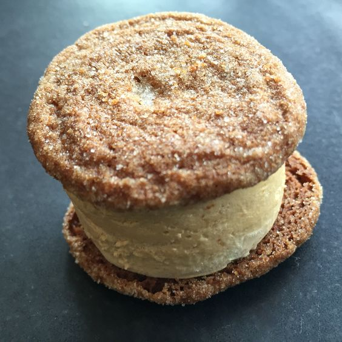

Foie Gras Ice Cream Cookie Sandwiches

Ingredients:
Foie Gras Ice Cream for your cookie sandwiches. You can find that recipe here
Butter, softened, 3/4 Cup
Large Egg, room temperature, 1 ea
All Purpose Flour 2-1/4 Cups
Additional Sugar as needed
Method:
Preheat your oven to 350°F.
In a large bowl, cream butter and sugar until light and fluffy. Beat in egg and molasses. Combine the flour, ginger, baking soda, cinnamon, cloves and salt; gradually add to the creamed mixture and mix well.
Roll into 1-1/2-in. balls, then roll in sugar. Place 2 in. apart on ungreased baking sheets. Bake at 350° until puffy and lightly browned, 10-12 minutes. Remove to wire racks to cool for about 1 hour.
Scoop on your foie gras ice cream and assemble as you like. You can even add a touch of almond butter on the inside for a savory surprise!